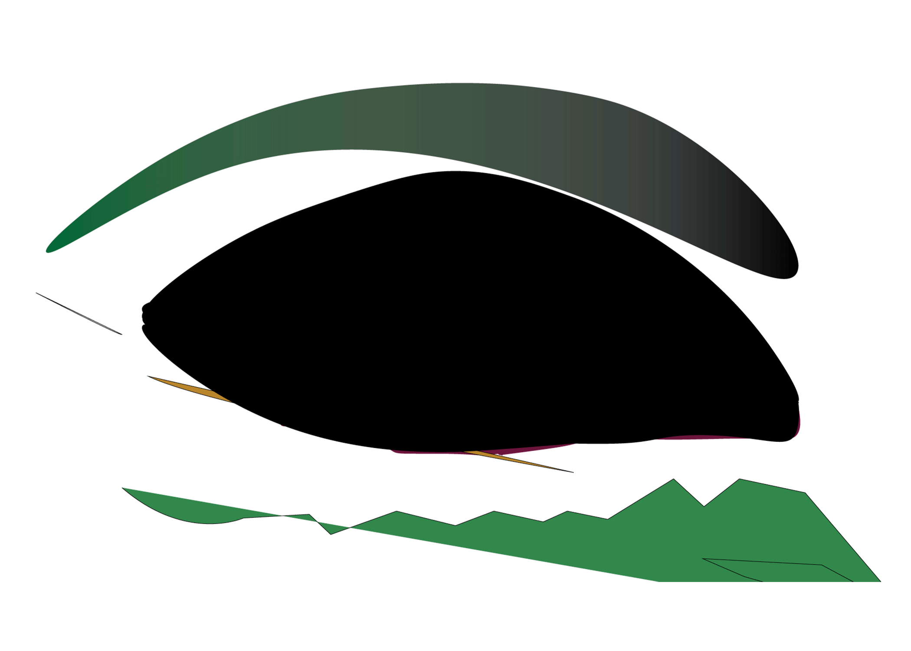

A few words are roaming through my mind, some being deception, improvement, and change. I wonder how much this founding of a horse galloping improved the digital era. I wonder the immediate and the later effects such a finding had. I truly disagree with this statement to an extent “The breakthrough is that the camera can see things that the human eye can't see”. Eyes can not even be compared with a camera. The eyes that most of us have been given are so detailed more than a camera can ever be. I remember looking at the moon with the beauty it naturally contains, then I thought to myself let me take a picture. I pulled out my phone, raised it upwards, and to my surprise the camera was not doing justice to the moon. The camera was not clear, it was blurry. I was using an Iphone 16 to take this picture yet it wasn’t as easy as simply looking upwards with the eyes I already have. Someone may say the picture wasn’t good because it was not an actual camera with good camera quality but to sum it up, even with a good camera one would still have to edit the picture they take in order to make it look as real and as clear as possible. Therefore I find it disrespectful or unjust to compare one’s eyes with a camera that has many flaws.